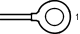

Наименование
Главный кабель моторного отсека и распределительный блок моторного отсека в сборе (фартук левого переднего крыла)
Код
1E
Каталожный номер
90980-09566
Цвет
Технические характеристики

Расположение
Блок реле моторного отсека в сборе и распределительный блок моторного отсека в сборе
Система
Система автоматического управления освещением
Фонари заднего хода
Передние противотуманные фары
Освещение
Система автоматического выключения освещения
Цепи электропитания
Задние противотуманные фонари
Задние фонари
Сцепное устройство для прицепа